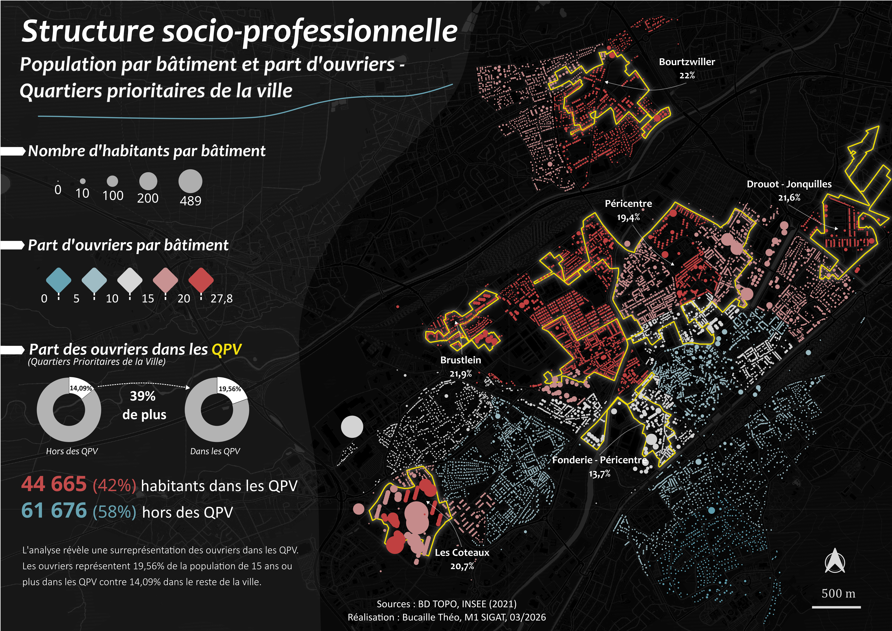
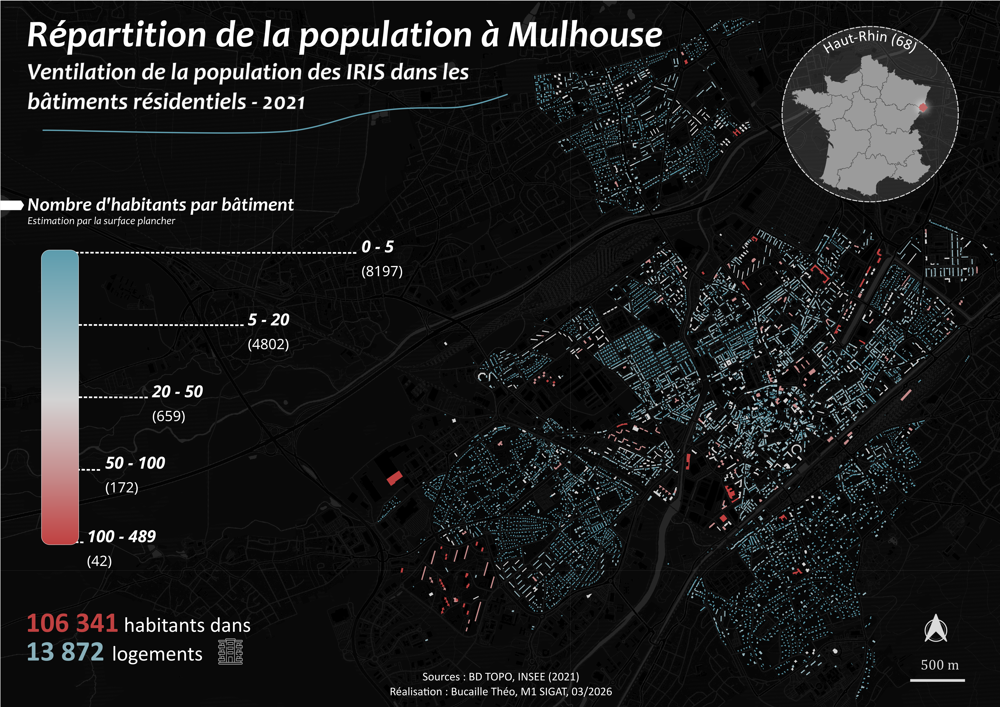
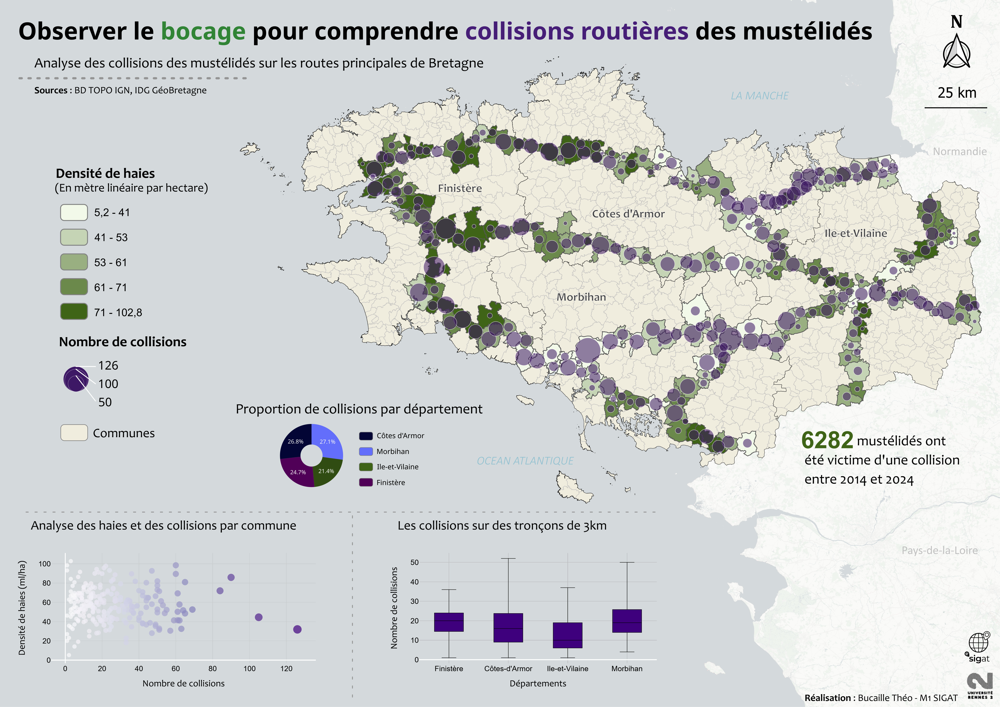
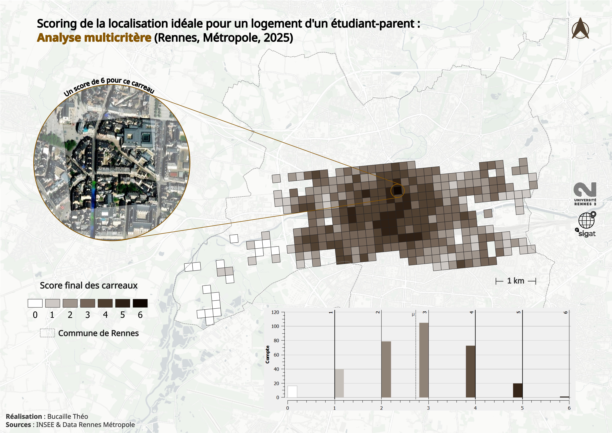
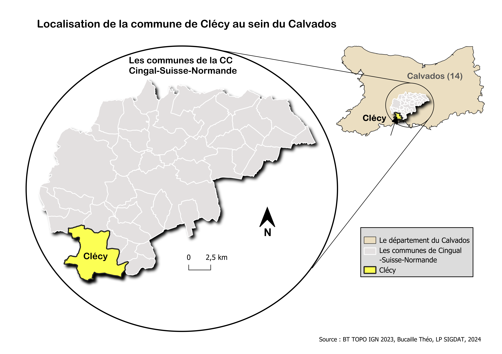
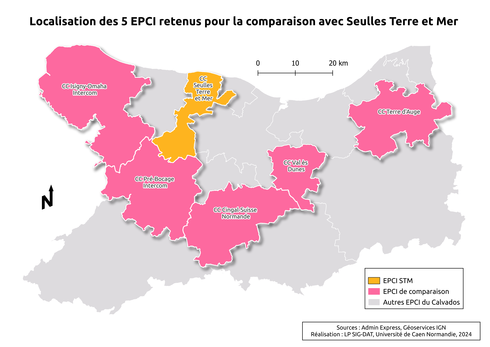
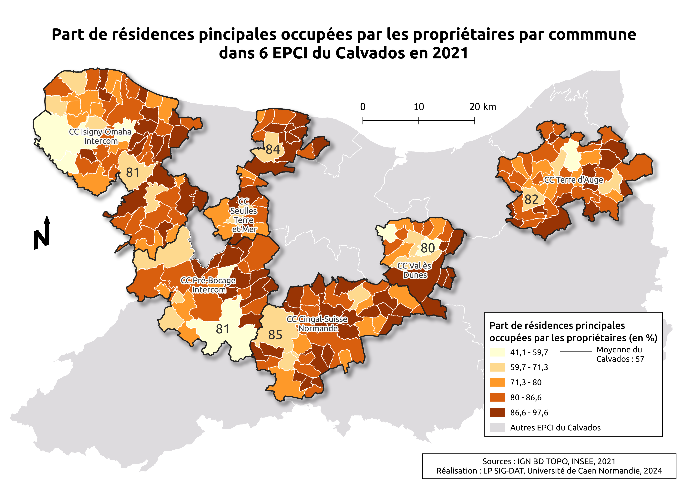
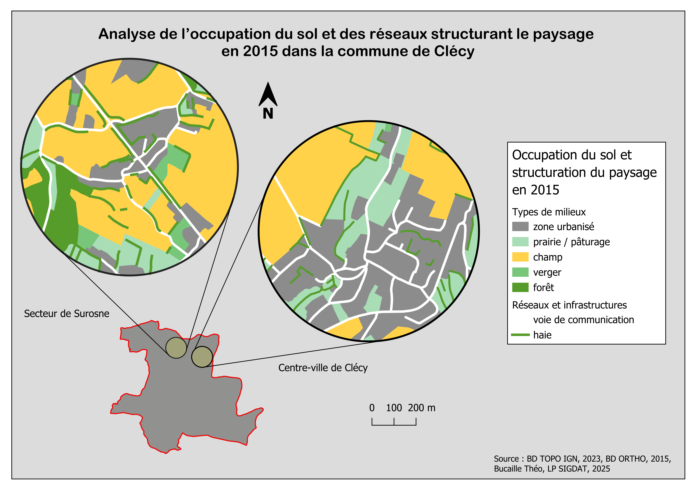
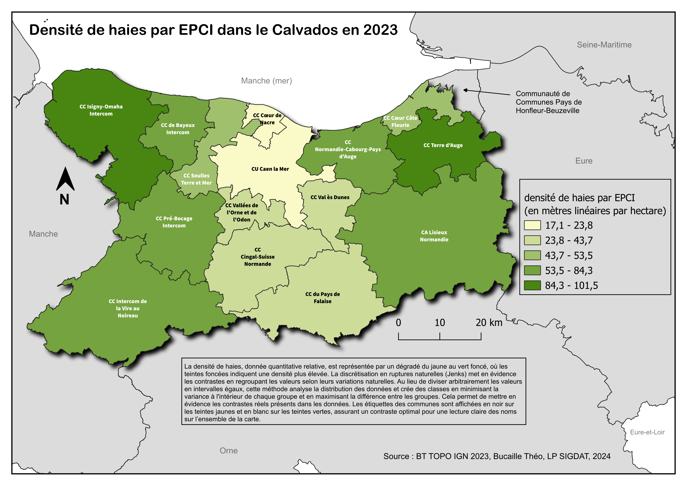
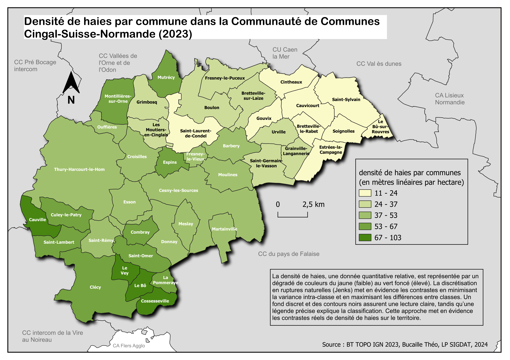

Étudiant en Master 1 SIGAT (Systèmes d'Information Géographique et Analyse des Territoires) à l'Université de Rennes 2, je suis actuellement à la recherche d'un stage pour une durée minimum de trois mois à partir de mi-mai à mi-août 2026.
Stage de 5 mois au sein de l'EPCI "Entre Bièvre et Rhônes" pour la création d'une base de données foncier.
Création d'un atlas départemental structuré autour de quelques thématiques sur le domaine des réseaux.
Diagnostic de l'éclairage public au sein de la prairie Saint-Martin à Rennes.
Analyse matricielle prospective sur l'installation de parc éolien au large de la Bretagne.
Scoring sur la recherche d'un appartement à Rennes.
Diagnostic territorial de l'EPCI Seulles Terre et Mer (14).
Détection des écotones à partir de données LIDAR et analyse statistique sous R.
Lissage spatial par la méthode des noyaux sur les inégalités à Bogota.
Notre enquête s’intéresse aux conditions de vie des étudiants de l’Université Rennes 2, et plus particulièrement à l’influence de la situation familiale sur leur vie quotidienne.
Essayez avec d'autres badges ou réinitialisez les filtres
















Maîtrise approfondie des principaux logiciels SIG pour la création, l'analyse et la visualisation de données géospatiales.
Solution Geo Software de Ciril Group & Apprentissage de GeoServer en autodidact
Connaissances en programmation pour l'analyse de données.
Connaissances en programmation pour l'analyse de données, l'automatisation de processus et le développement d'applications web.
Dessin assistée par ordinateur : cartographie & infographie.
Un peu d'expérience personnelle grâce à la création de ce site web - en cours d'apprentissage
De nombreux projets individuels et collectifs
Maîtrise des documents de planification structurant et connaissance de leur portée juridique, de leurs articulations et de leur prise en compte dans les politiques publiques d’aménagement, de développement durable et d’égalité des territoires.
Maîtrise approfondie des techniques d'enquêtes par entretiens et par questionnaires.
N'hésitez pas à me contacter pour discuter de projets, stages ou opportunités professionnelles.
gtbe189@gmail.com
+33 6 10 29 11 37
Rennes, France